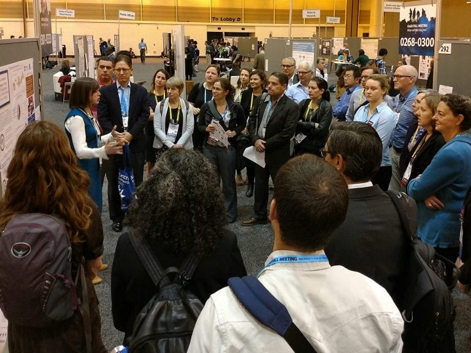

Publications & News
News features and peer-reviewed publications from the FEWsLab team.
News and Blog Posts
- Dr. Grady was quoted in a Law360 analysis of What The Feds’ Colo. River Plan Could Mean For The West.
- Dr. Grady was quoted in a Marketplace report on how drought could zap electricity production and raise prices.
- Dr. Grady and PhD student Lauren Dennis co-authored an article on climate change and hydropower for The Conversation.
- Dr. Grady and Lauren Dennis were interviewed on WORT about how hydropower impacts the electric grid.
- FEWsLab articles were featured in the Global Water Forum blogs on climate adaptation and language use in water resources research.
Featured Journal Articles
- Grady, C. et al. Hidden Gems: Highlighting Underrepresented but Valuable Knowledge in the Water-Energy-Food Nexus. Journal of Hydrology, 2023. https://doi.org/10.1016/j.jhydrol.2023.129597
- Hinojos, S. et al. Social and Environmental Vulnerability to Flooding. Applied Geography, 2023. https://doi.org/10.1016/j.apgeog.2023.103017
- Grady, C. et al. When Smart Systems Fail: The Ethics of Cyber-Physical Critical Infrastructure Risk. IEEE Transactions on Technology and Society, 2021. PDF
- Mahjabin, T. et al. Virtual Nitrogen and Virtual Water Transfers in Food Trade Networks. Environmental Research Letters, 2021. https://doi.org/10.1088/1748-9326/abe06f
- Calder, R. et al. COVID-19 Reveals Vulnerabilities of the FEW Nexus to Pandemics. Environmental Science & Technology Letters, 2021. https://doi.org/10.1021/acs.estlett.1c00291
- Gomez, M. et al. Fragility of a Multilayer Network of Intranational Supply Chains. Applied Network Science, 2020. https://link.springer.com/article/10.1007/s41109-020-00310-1
- Mohammadpour, P. et al. Food, Energy, Water Security in Ecuador, Bolivia, and Peru. Environmental Science & Policy, 2019. https://doi.org/10.1016/j.envsci.2019.08.014
- Mahjabin, T. et al. Water Footprint Efficiency Across the US. PLOS ONE, 2018. https://doi.org/10.1371/journal.pone.0202301
- Grady, C. et al. Social Network Analysis for International Development Project Selection. Expert Systems with Applications, 2015. http://www.sciencedirect.com/science/article/pii/S0957417415001463?via%3Dihub
Google Scholar Profiles
- Caitlin Grady
- Michael Gomez
- Selena Hinojos
- Abbey Kollar
- Paniz Mohammadpour
- Lauren Dennis
- Sarah Torhan
- Tasnuva Mahjabin
- Luis Delgado
Peer-Reviewed Books & Chapters
- Younos, T. and C. Grady, eds. 2014. Potable Water: Emerging Global Problems and Solutions. Springer. Link
- Grady, C. et al. 2014. Global Potable Water: Current Status, Critical Problems and Future Perspectives. In: Potable Water. Springer.
- Younos, T. and C. Grady, eds. 2013. Climate Change in Water Resources. Springer. Link

Dr. Grady at AGU 2017
:::